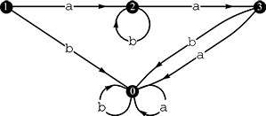

Home Page
F.A.Qs
Statistical Charts
Past Contests
Scheduled Contests
Award Contest
| Online Judge | Problem Set | Authors | Online Contests | User | ||||||
|---|---|---|---|---|---|---|---|---|---|---|
| Web Board Home Page F.A.Qs Statistical Charts | Current Contest Past Contests Scheduled Contests Award Contest | |||||||||
|
Language: Pumping Lemma
Description In the theory of formal languages, the pumping lemma for regular languages bears importance for its characterization of an essential property of all regular languages. In case of your unfamiliarity, we shall first review several related concepts. A regular language is the set of all strings accepted by a deterministic finite automaton (DFA). A DFA is an abstract model of computation informally explained below. A DFA can be depicted by a state chart. Each node in the state chart represents a state. Of all states, exactly one is designated as the start state; and a subset of them is designated as a set of final states. Each labeled directed arc in the state chart represents a state transition. When the DFA works, it starts in the start state, reads symbols from a string one by one, and performs state transition accordingly. A state transition “x —c→ y” means that if the DFA reads a symbol c when it is in state x, it will transit to state y. The DFA is said to accept a string if it is in a final state when it finishes reading symbols from the string.  Figure 5: Transition function δ of DFA M Consider the state chart in Figure 5, which describes a DFA M. The states of M are {0, 1, 2, 3}. We designate 1 as the start state and 3 as the only final state. When fed with the string aba, M starts in state 1 and performs the state transitions “1 —a→ 2 —b→ 2 —a→ 3” to reach the final state 3. Consequently, M accepts the string aba. Precisely speaking, M accepts the regular language L = {abia : i ≥ 0} = {aa, aba, abba, …}. The pumping lemma for regular languages, put informally, states that for any sufficiently long string w of a regular language L can be written, subject to some length constraints, as the concatenation of three substrings x, y and z such that the strings resulting from removing or repeating y in w, i.e. xz and xyyz, xyyyz, …, are also strings of L. Given a DFA accepting a regular language L, find a string w ∈ L satisfying that w can be written as w = xyz so that {xz, xyz, xyyz, …} ⊆ L, and 0 < |y| ≤ |w| < 3n (| · | means the length of a string). Input The input contains a single test case describing a DFA whose states are {0, 1, 2, …, n} and which reads only lowercase letters. The first line contains n and the start state s (1 ≤ s ≤ n ≤ 1000). The second line contains an integer m (0 ≤ m ≤ 26n). Each of the following m lines contains an integer x, a symbol c and another integer y (1 ≤ x ≤ n; c ∈ Σ; 0 ≤ y ≤ n), specifying a state transition “x —c→ y”. The state transition “x —c→ 0” is implicitly assumed for any state x and symbol c if not otherwise specified. The next line contains an integer k (0 ≤ k ≤ n), which is followed by a line containing k integers, the final states of M. 0 is not a final state. If there multiple choices of w, you may choose any one. Output If some w = xyz ∈ L satisfies the given requirements, print “x(y)z”; otherwise, print “*”. Sample Input 3 1 3 1 a 2 2 a 3 2 b 2 1 3 Sample Output a(b)a Source | ||||||||||
[Submit] [Go Back] [Status] [Discuss]
All Rights Reserved 2003-2013 Ying Fuchen,Xu Pengcheng,Xie Di
Any problem, Please Contact Administrator